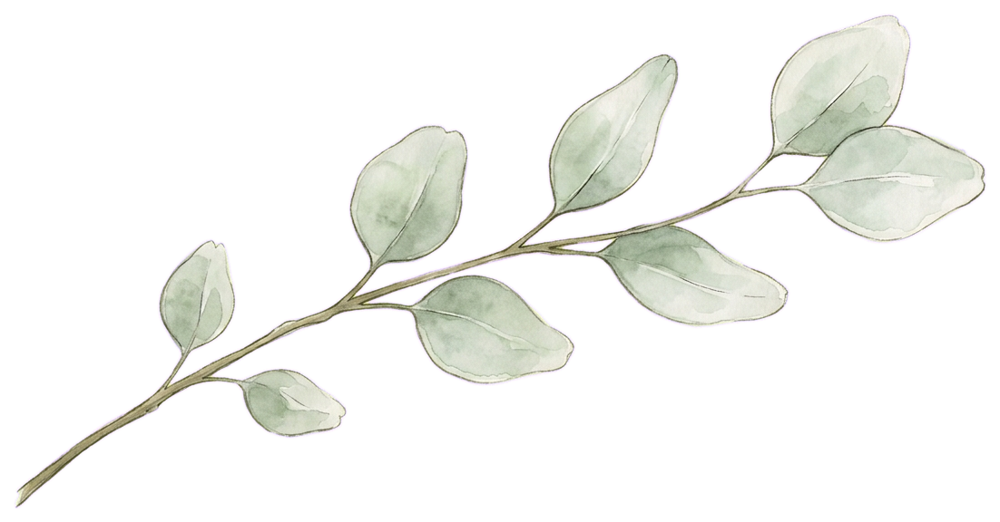
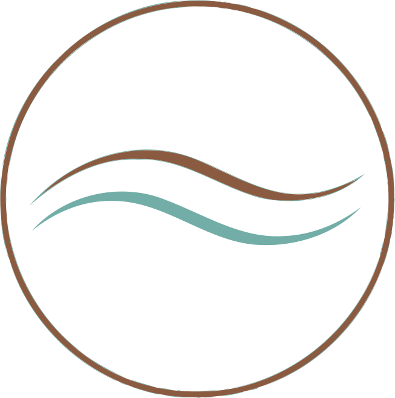
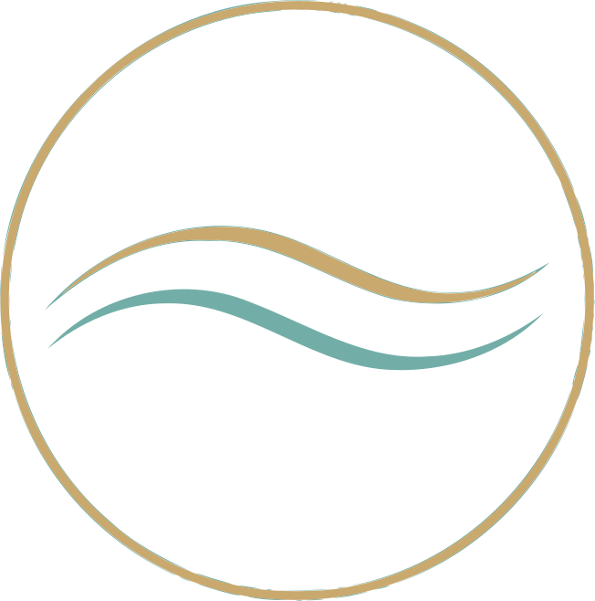

Masáže & Frekvenční péče
Když se dotek spojí s energií.
Lidské tělo a vše živé kolem nás, i uvnitř nás, vysílá své vlastní frekvence. Plasmový generátor tyto frekvence přijímá, ale rovněž vysílá jemné, přesně cílené frekvenční vlny, které prostupují celým tělem až k jednotlivým buňkám. Umožňuje tak našemu tělu nejen regenerovat, ale v dokonalé frekvenční vlně i eliminovat nežádoucí mikroskopickou zátěž. Tělo tak dostává příležitost odložit vše zbytečné, čímž dochází k aktivaci imunitního systému, který pomůže tyto oslabené vlivy z organismu s lehkostí vyloučit.
Frekvenční vlny mohou tělo v celém procesu velmi jemně podpořit a vyladit tak, aby došlo k dokonalé regeneraci a návratu k přirozené síle.
Upozornění: jedno sezení nemusí být vždy dostačující a je potřeba působení frekvencí opakovat. Ideální je 3x v intervalu max. 5 dní. Plazmový generátor Rifetech je experimentální přístroj a nenahrazuje lékařskou péči, není zamýšlen k léčení nemocí. Není zdravotnický prostředek.
Masáž, která dává tělu prostor zpomalit. Každá péče vzniká podle toho, co vaše tělo právě potřebuje.
"Nalaďte se se mnou na vlnu RADOSTI, LEHKOSTI a VDĚČNOSTI."
Certifikovaná neinvazivní péče
BEMER je jemná, neinvazivní metoda, která pomocí cílených nízkofrekvenčních elektromagnetických pulzů rozproudí život v těch nejjemnějších vlásečnicích našeho těla. Otvírá cestu k přirozené obnově buněčné energie – buňky získávají maximální přísun kyslíku i živin, zatímco nahromaděné odpadní látky mohou z těla v lehkosti odejít.
Když se péče propojí v dokonalý rituál
Věřím, že péče o tělo je vzájemným sdílením energie a času. Svoji hodinovou péči, během které plně propojuji masáže, frekvenční regeneraci i přístroj BEMER na míru vašim potřebám, si cením na: 800 KČ / hodina